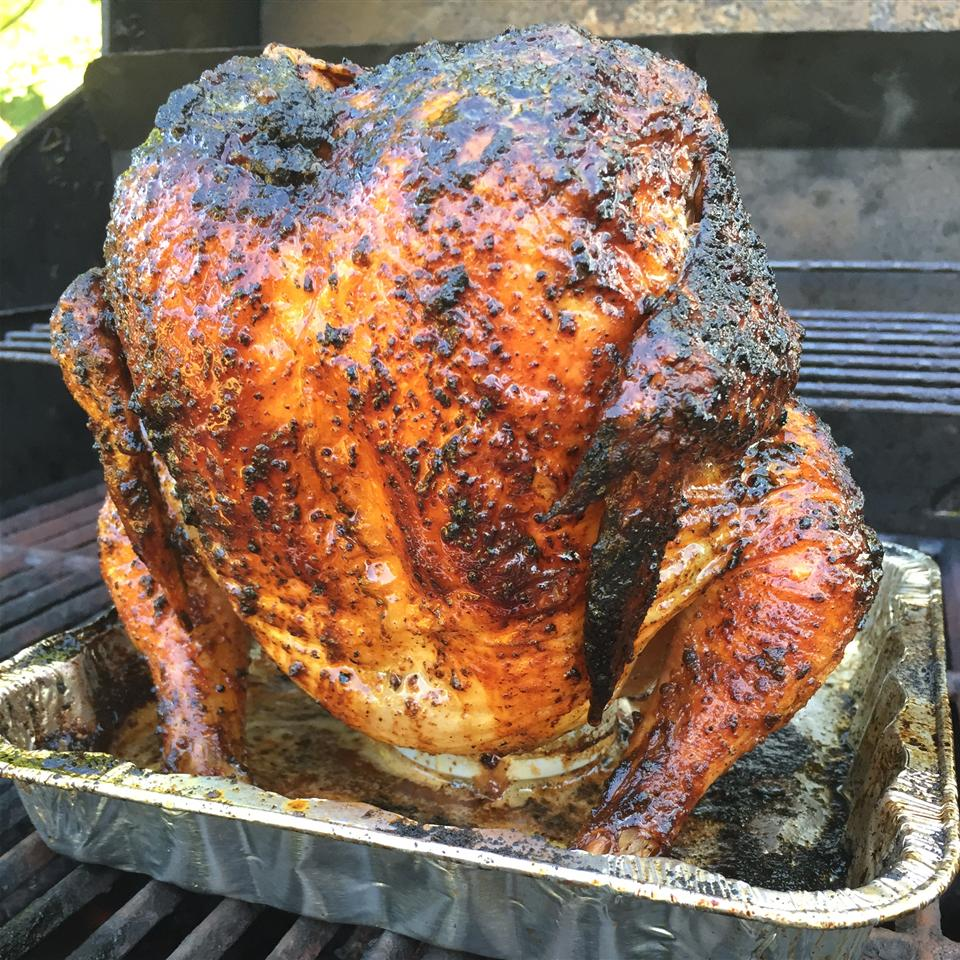

Beer Can Chicken

Description
A whole chicken is seasoned and slowly cooked on the grill.
This is a bit unorthodox, but the end result is moist, flavorful, and amazing.
All you'll need is some chicken, butter, beer, and seasonings.
Ingredients
- 1 cup butter
- 2 tablespoons garlic salt
- 2 tablespoons paprika
- salt and pepper to taste
- 1 (12 fluid ounce) can beer
- 1 (4 pound) whole chicken
Steps
- Preheat an outdoor grill for low heat.
- In a small skillet, melt 1/2 cup butter. Mix in 1 tablespoon garlic salt, 1 tablespoon paprika, salt, and pepper.
- Discard 1/2 the beer, leaving the remainder in the can. Add remaining butter, garlic salt, paprika, and desired amount of salt and pepper to beer can. Place can on a disposable baking sheet. Set chicken on can, inserting can into the cavity of the chicken. Baste chicken with the melted, seasoned butter.
- Place baking sheet with beer and chicken on the prepared grill. Cook over low heat for about 3 hours, or until internal temperature of chicken reaches 180 degrees F (80 degrees C).
Credit